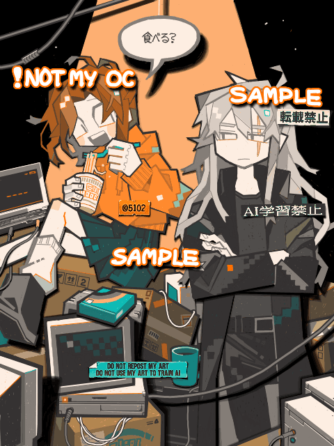

Lance & Tori（Art trade）

Made with
Tegaki Editor
手書きブログ
で描いたもの。
こちらはアートトレードの絵で、キャラクターはMun氏のOCです。
手書きブログでかなり自在に絵が描けるようになってきた気がする！使い始めたころと比べると、物の重なりを描くのに躊躇しなくなった。レイヤー1枚のみだから大きなやり直しが必要な時は苦労するけど、結局「後でどうにかなる！」と勢いで描き進めることが増えた。
2025/10/17
 Lance & Tori（Art trade）
Lance & Tori（Art trade）